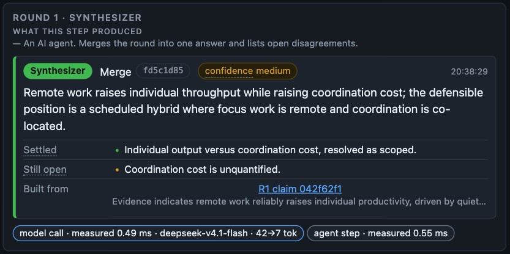
You have not seen this project before. Everything you need to critique the interface is in this pack: what the software does, what the screen is trying to achieve, the screen itself at full size, and the specific questions we cannot answer ourselves.
Screenshots are of the running application, unedited except for cropping. All numbers on the slides are read from the same data the interface reads. Scores and similarities are printed at two decimals, the score breakdown at four; the forced run's final score is 0.1536 shown as 0.15.
Four AI agents argue about a question in rounds until a scoring program decides the group has settled — or gives up.
One pass through all five is one round. A run is one or more rounds. A run ends either because the group settled, or because it hit the round limit.
score = 0.80 × alignment
+ 0.20 × (1 − opposition)
alignment — how close this round's position is to previous rounds'. High means the group stopped moving.
opposition — the share of challenges this round that argue against.
A run stops on agreement when the score reaches the target and the minimum number of rounds has run. It stops regardless when the maximum is hit.
The interesting content is a process, not a result: five steps, repeated, with a score that changes meaning as it goes. Most dashboards show an end state. This one has to show the loop and still make the ending obvious.
Every term below appears in the interface or in this deck. The app defines each one in its Terms tab; this is the same list, so you never have to leave the page to follow a slide.
| Term | What it means here |
|---|---|
| Run | One complete debate about one question, from first round to final answer. |
| Round | One pass through all five steps. A run is one or more rounds. |
| Agent | One participant with a fixed job: Researcher, Skeptic, Visionary or Synthesizer. |
| Claim | A position stated by the Researcher, with the evidence behind it. |
| Challenge | The Skeptic's reply to one claim. |
| Stance | Which way a challenge leans: oppose, support, or refine. |
| Lateral idea | An unconventional angle from the Visionary. |
| Synthesis | The Synthesizer's merged answer for one round. The last one becomes the run's final answer. |
| Term | What it means here |
|---|---|
| Arbiter | A plain program, not an AI model. Scores the round and decides whether to continue. |
| Alignment | How similar this round's position is to earlier rounds'. High means the group stopped moving. |
| Opposition | The share of this round's challenges that argue against. |
| Score | 0.80 × alignment + 0.20 × (1 − opposition). Ranges 0 to 1. |
| Converged | The score reached the target and the minimum rounds ran, so the debate stopped on agreement. |
| Forced stop | The round limit was hit before agreement. The agents did not settle. |
| Embedding | The meaning of a piece of text as a list of numbers. Similar meaning, similar numbers. |
| Cosine similarity | How close two embeddings are: 1 = same meaning, 0 = unrelated, negative = opposite. |
| Span | One timed step of the run, used for the timing graph. |
| Replay | Recorded AI answers played through the real agent code. See slide 13. |
Three objectives, in priority order. They conflict — the critique we want is where we got the balance wrong.
A complete beginner should be able to say, without help: what this screen is, what each region is for, why the debate continued or stopped, and what the final answer was.
Every domain term is either expanded in place or listed in a glossary inside the app.
All 58 fields of the underlying run state are either rendered or listed as deliberately hidden — never dropped silently. There is no "advanced" toggle: the depth is present on the same screen, behind disclosure, not behind a setting.
This is the hardest constraint. It is why the layout is three columns plus a tabbed strip.
Every figure on screen is traceable to the run data. Nothing is rounded into a lie, invented for effect, or shown without the rule that produced it.
The score panel exists for this reason: it shows the arithmetic, not just the result.
Our working definition of failure: a reviewer who has never seen this app cannot answer any of the four questions in objective 1 after 60 seconds, or answers one wrongly from what is on screen.
One recorded run, mid-debate — round 1 of 2, arbiter step selected. The numbers below are the regions described on the following slides.
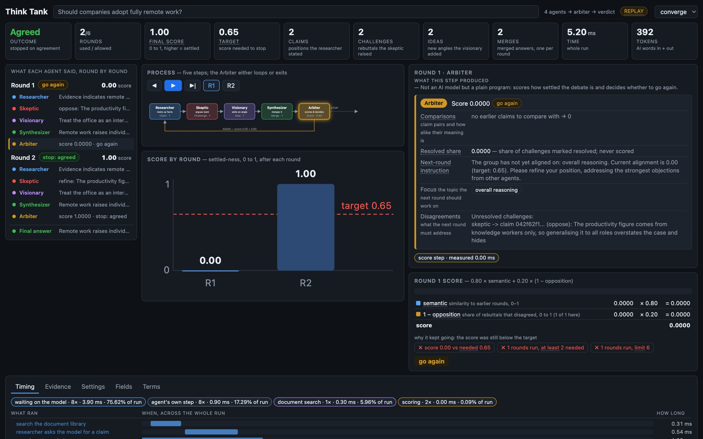
The full-width strip at the very top, above every panel. It is the only region that answers "what happened" without reading anything else.
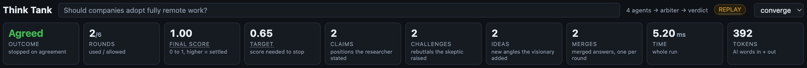
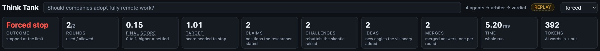

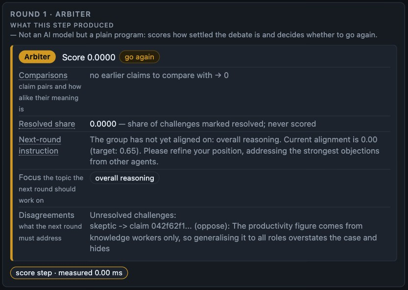
Top centre. A diagram, not a list: the five steps, and the two possible exits from the arbiter.
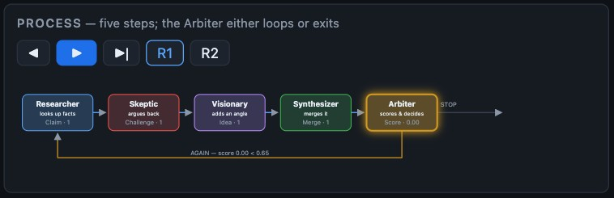
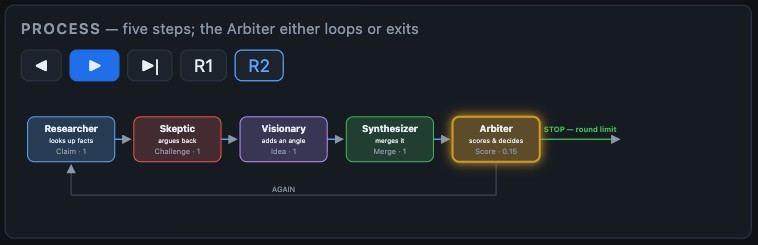
The five steps sit left to right with the count of what each produced underneath. Two edges leave the arbiter: one loops back to the Researcher, one exits to the final answer. Exactly one is highlighted at a time, so "why is there another round?" is answered by shape, not by a sentence. Same diagram, opposite decision — the shape carries the meaning without reading the score.
The exit edge and its "final" label sit tight against the panel's right edge; at narrower widths that label is the first thing to look cramped. The arbiter is described as "a plain program, not an AI model" only in its panel subtitle — should that be on the node itself?
Centre column under the diagram, plus the panel to its right. The chart is the shape; the panel is the arithmetic.
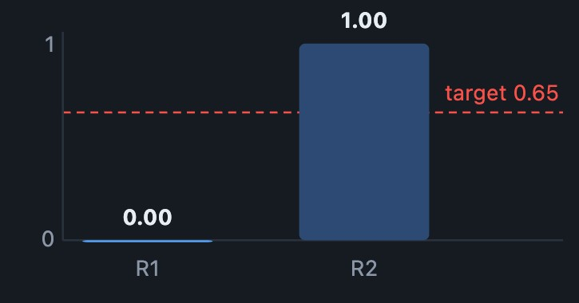
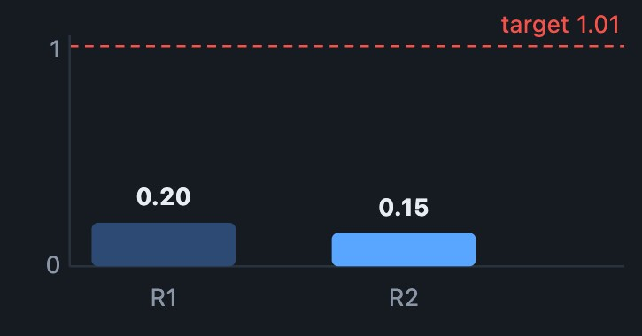
| input | value | weight | term |
|---|---|---|---|
| alignment | 0.0000 | × 0.80 | 0.0000 |
| 1 − opposition (1 of 1) | 0.0000 | × 0.20 | 0.0000 |
| score | 0.0000 |
Round 1 has nothing earlier to compare with, so alignment is 0 by definition — the panel says so in words rather than showing a bare zero.
The whole left column, full height. The only chronological view in the app.
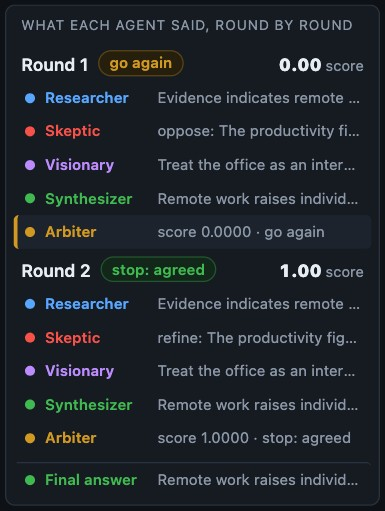
Every step of every round is one row: agent, a one-line preview, and — for the arbiter — the round's score. Selecting a row changes the two right-hand panels without navigating. The rail is the app's only chronological view.
Long runs (up to 6 rounds plus the final answer) exceed the rail's height, so it scrolls independently of the page. Two scrollbars on one screen is a real cost.
Right column, top. Selecting a step swaps this panel; each agent's output has a different structure, so the panel changes shape rather than forcing one template.
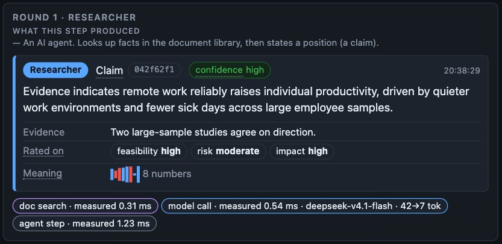 |
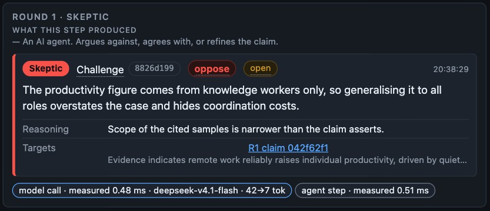 |
The full-width strip along the bottom of the window.
Five tabs hold the rest of the run data. One click away, always present, never optional.
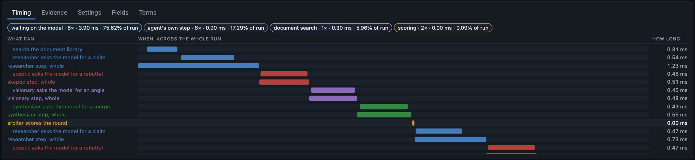
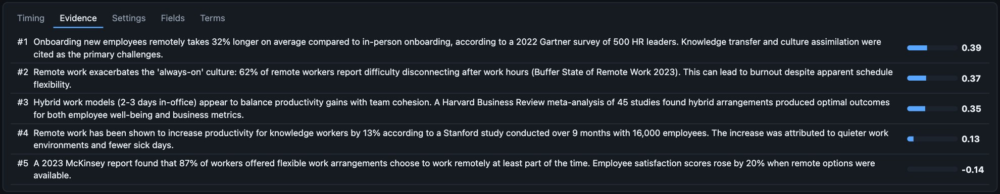
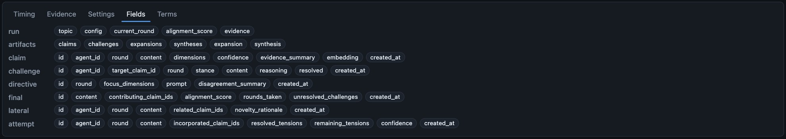
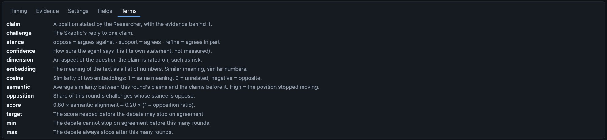
The question this slide exists for: is a five-tab strip of raw data the right home for "show everything", or a dumping ground that turns the honest-inventory objective into a checkbox? We do not have an answer.
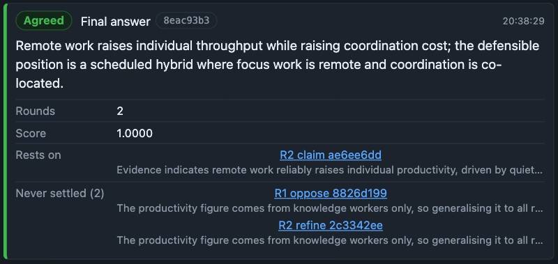
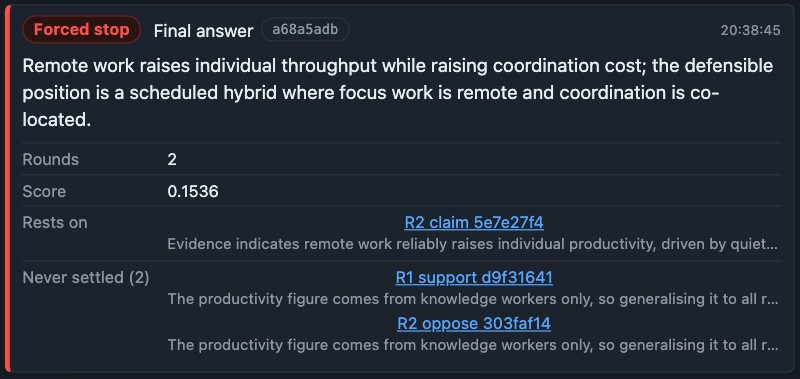
Four things: the outcome tile's word and colour, the final card's badge, the arbiter's verdict chip, and the score. Layout, panels, tabs and wording are otherwise identical.
A forced stop means the agents did not agree, yet the answer keeps the same prominence and the same "Rests on" structure. Is a colour plus one word enough to stop a reader taking an unconverged answer as the group's conclusion?
The screenshots are of the real application running the real agent code — but the model answers are a recording played back through a local stub, and the meaning vectors are placeholders derived from hashing the text. So the scores are internally consistent and structurally correct, and they are not evidence that the debate quality is good.
The app says this itself — the replay chip in the header, hovered for its definition, and the Terms tab. Please critique the design, not the wording or insight of the agent output.
Every panel is checked against the run data programmatically: the rendered numbers are compared field by field with the source values, and the prose claims about how scoring works are checked against the code.
That catches wrong numbers. It cannot catch "this is confusing", which is why this pack exists.
Read from the run report that feeds every panel on screen.
Ten questions, ordered by how much a different answer would change the design. Answer in any depth; the ones you cannot answer are as useful as the ones you can.
Be blunt and specific. "Panel 4 is noise" is useful; "the design is clean" is not. For every problem, say what you expected to see instead — that is the part we can act on.
You do not need to be gentle about the visual style, the density, or the vocabulary.
Each region you mark is either cut, moved behind disclosure, or defended. We will report back on which, and why.
Print this page, or copy the table into whatever you take notes in. One line per region.
| Region | Keep / change / remove | Why — and what you expected instead |
|---|---|---|
| 1 Summary bar | ||
| 2 Conversation rail | ||
| 3 Process diagram | ||
| 4 Score chart | ||
| 5 Detail panel | ||
| 6 Round arithmetic | ||
| 7 Data tabs | ||
| Other |
One last question, and the one we care most about: after this pack, could you explain to someone else what a round is and why the debate ended when it did? If not, say where it broke.